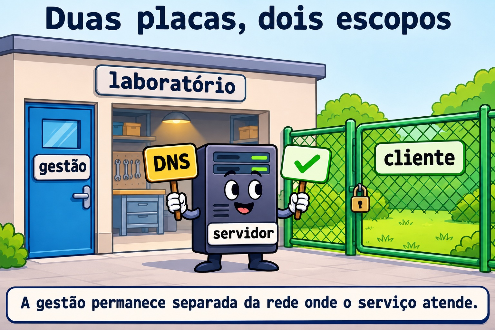

Aula 19.1 · DNS autoritativo
O coração desta aula: construa a VM 204 e prove respostas A, MX e PTR na rede isolada.
| Ficha | Plano de trabalho |
|---|---|
| Módulo | M19 · Serviços de rede, aula 1 de 9 |
| Quando | Semana 25 |
| Ao final | construa a VM 204 e prove respostas A, MX e PTR na rede isolada. |
| Pré-requisitos | M17, M18; VMs 201 e 202; usuário student; rede isolada vmbr17 |
| Duração | 150–180 minutos |
| Snapshot | m19a1-inicio e m19a1-fim; somente VMs indicadas |
O nó Proxmox recebe somente comandos identificados como host.
Os demais comandos pertencem à VM indicada, com Bash e usuário student.
Não execute blocos seguintes se uma verificação falhar.
Guarde a saída real no diário; esta aula não apresenta uma execução já realizada.
Antes das consultas pelos clientes, conclua o guia de bancada M19 para as placas isoladas das VMs 201 e 202; a criação da VM 204 permanece nesta aula.
Nomes canônicos do módulo: o nome da VM no Proxmox e o hostname do sistema operacional devem corresponder ao papel antes de executar as guardas. Um nome DNS de serviço não muda o hostname. Se o inventário divergir, reconcilie-o pelo console antes de seguir; não ignore as guardas.
| VM | Hostname curto | Endereço isolado |
|---|---|---|
| 201 | rocky-lab | 192.0.2.201 |
| 202 | debian-lab | 192.0.2.202 |
| 204 | srv-deb | 192.0.2.204 |
| 212 | m19-client | DHCP; somente desafio 19.9 |
1 · Aquecimento
- Qual diferença existe entre o endereço usado para administrar uma VM e aquele em que um serviço atende ao lab?
- Consultar um nome prova automaticamente que a consulta reversa funciona?
- Como você provaria que a VM 204 está livre em todo o cluster?
Desenhe a VM 204 com duas placas.
Marque o único segmento onde DNS deve escutar e deixe a gestão fora dele.
2 · Por que importa
Um serviço de correio precisa localizar o destino MX e conferir os nomes associados aos endereços.
Um único registro A não resolve essas perguntas.
A VM 204 passa a sustentar os próximos serviços.
Criá-la com identidade, disco e rede conferidos evita carregar um erro de base pelo módulo inteiro.
Ponte Windows
Uma zona DNS continua sendo um conjunto de registros autoritativos.
O cliente pode consultar esse servidor diretamente sem torná-lo o resolvedor padrão de toda a máquina.
3 · Modelo mental


A gestão usa a rede real existente.
A placa isolada usa 192.0.2.204/24, sem gateway; vmbr17 não possui porta física, IP no host, roteador nem NAT.
O prefixo 192.0.2.0/24 é didático e fica estritamente segregado.
Antes de atribuí-lo, confira sobreposição com rotas, gestão e VPN em todas as máquinas envolvidas.

O servidor é autoridade de lab.test e da reversa 2.0.192.in-addr.arpa.
Um PTR não nasce automaticamente de um A.
Rocky × Debian
O servidor da aula é Debian 13; Rocky 201 permanece como cliente do segmento isolado.
Os nomes de serviços e caminhos BIND podem mudar entre distribuições: não copie os do servidor Debian para o cliente Rocky.
4 · O essencial
| Objeto | Contrato |
|---|---|
| 204 srv-deb | Debian 13; 2 vCPU; 2 GiB; disco 20 GiB em vm-hdd |
| Firmware | q35; OVMF; x86-64-v2-AES; QGA |
| net0 | vmbr0; gestão real reservada fora do pool DHCP real |
| net1 | vmbr17; 192.0.2.204/24; sem gateway |
| Clientes | 201 = 192.0.2.201; 202 = 192.0.2.202 |
| Serviço | TCP e UDP 53; somente loopback e placa isolada |
O host deve ter vm-hdd já validado no M17 e storage de arquivos que aceite ISO.
Não invente um storage local nem crie a VM sobre um ID ocupado.
Decida 1
A VM 204 aparece como CT em outro nó.
O que fazer?
A. Criar 204 no nó atual porque o tipo é diferente.
B. Apagar o CT para liberar o número.
C. Parar e reconciliar o inventário antes de criar.
5 · Lab guiado
Passo 1 · Criar a base com origem verificável
Palpite: Uma ISO que inicia já prova a autenticidade da origem?
Na VM 202, use a página oficial Debian de imagens DVD amd64 para escolher a versão 13 disponível.
Copie a URL versionada e o nome real do DVD-1; não use um nome ou hash ilustrativo.
sudo apt update && sudo apt install curl gpgv debian-keyring
mkdir -p ~/m19-iso && cd ~/m19-iso
read -r -p "URL versionada iso-dvd: " ISO_BASE
read -r -p "Nome Debian 13 amd64 DVD-1: " ISO_FILE
[[ "$ISO_BASE" == https://cdimage.debian.org/debian-cd/*/amd64/iso-dvd ]] || exit 1
[[ "$ISO_FILE" =~ ^debian-13[.][0-9]+[.][0-9]+-amd64-DVD-1[.]iso$ ]] || exit 1
for f in "$ISO_FILE" SHA512SUMS SHA512SUMS.sign; do
curl -fLO "$ISO_BASE/$f" || exit 1
done
gpgv --keyring /usr/share/keyrings/debian-role-keys.pgp SHA512SUMS.sign SHA512SUMS || exit 1
awk -v f="$ISO_FILE" '$2==f || $2=="*"f {print}' SHA512SUMS > chosen.sha512
test "$(wc -l < chosen.sha512)" -eq 1 || exit 1
sha512sum -c chosen.sha512 || exit 1Se a chave de assinatura vigente não estiver no keyring atualizado, pare e siga a página Debian de verificação para autenticar a chave.
Nunca ignore uma assinatura ruim ou importe uma chave aleatória para prosseguir.
Transfira o DVD verificado ao storage ISO do nó por seu fluxo autorizado.
No host, localize o volume com pvesm list, copie o identificador inteiro e compare seu SHA512 com o verificado na VM 202.
pvesm status
read -r -p "Storage ISO existente: " ISO_STORAGE
pvesm list "$ISO_STORAGE" --content iso
read -r -p "Volume completo do DVD verificado: " ISO_VOLUME
ISO_PATH=$(pvesm path "$ISO_VOLUME") || exit 1
test -f "$ISO_PATH" || exit 1
sha512sum "$ISO_PATH"
pvesh get /cluster/resources --type vm --output-format json > /tmp/m19-resources.json
python3 -c 'import json; assert not any(x["vmid"]==204 for x in json.load(open("/tmp/m19-resources.json")))' || exit 1
ip -4 route show table all
ip -d link show vmbr17
ip -br address show dev vmbr17
pvesm status --storage vm-hddConfirme visualmente bridge sem uplink e sem endereço no host, rota sem conflito e hash idêntico.
Registre nome do nó, storage, nome completo, hash e ISO_VOLUME no diário ~/m19-operador.env; não o carregue como código.
Preserve o DVD para o desafio 19.9.
qm create 204 --name srv-deb --machine q35 --bios ovmf --cpu x86-64-v2-AES --cores 2 --memory 2048 --agent enabled=1 --scsihw virtio-scsi-single --scsi0 vm-hdd:20 --efidisk0 vm-hdd:1,efitype=4m,pre-enrolled-keys=1 --net0 virtio,bridge=vmbr0 --net1 virtio,bridge=vmbr17 --ide2 "$ISO_VOLUME",media=cdrom --boot order=ide2 || exit 1
qm config 204Somente após a criação ter terminado sem erro, abra o console 204 e inicie a instalação manual pelo DVD.
Escolha somente o disco vazio de 20 GiB da nova VM.
Se o disco ou a identidade divergirem, pare.
Configure apenas a placa correspondente à MAC de net0 na gestão: endereço real reservado, máscara, gateway e DNS autorizados.
Defina hostname srv-deb, usuário student e senha de root de emergência guardada fora do material.
Selecione servidor SSH e utilitários padrão, sem ambiente gráfico.
Deixe net1 sem configuração no instalador.
Conclua no disco da VM e entre no console como root.
apt update && apt install sudo qemu-guest-agent ifupdown openssh-server || exit 1
usermod -aG sudo student
systemctl enable --now qemu-guest-agent
sshd -T | grep -E '^(permitrootlogin|passwordauthentication) 'Exija login SSH por chave de student, validado em segunda sessão, e root por senha somente no console; ajuste a política SSH pelo procedimento do M15 se necessário.
Não feche a sessão de emergência antes da prova.
Volte ao terminal root do nó Proxmox antes do bloco seguinte.
qm set 204 --agent enabled=1 --boot order=scsi0
qm agent 204 ping
qm snapshot 204 m19a1-inicioSaída esperada: Uma VM nova instalada e administrável; nenhum DNS ou DHCP iniciado. QGA responde somente após o agente estar instalado e o canal ativado.
Verifique: Confronte MACs, gestão reservada, boot pelo disco e espaço livre. Não use NetworkManager na VM 204.
Passo 2 · Conectar somente a placa isolada
Palpite: O segundo nome mostrado por ip link é necessariamente net1?
No host leia a MAC de net1 com qm config 204.
Na VM 204 compare com ip -br link, examine rotas e a configuração ifupdown existente.
Pare se o prefixo isolado conflitar com qualquer rota de gestão ou VPN.
ip -br link
ip -4 route show table all
cat /etc/network/interfaces
sudo grep -R -n . /etc/network/interfaces.d/
read -r -p "Interface da MAC de net1: " LAB_IF
[[ "$LAB_IF" =~ ^[a-zA-Z][a-zA-Z0-9_-]{0,14}$ ]] || exit 1
ip link show dev "$LAB_IF" || exit 1
grep -Eq '^[[:space:]]*source(-directory)?[[:space:]]+/etc/network/interfaces.d/' /etc/network/interfaces || exit 1
sudo test ! -e /etc/network/interfaces.d/m19-lab || exit 1
sudo test ! -L /etc/network/interfaces.d/m19-lab || exit 1
sudo test ! -e /etc/m19-lab.env || exit 1Antes de gravar, confirme que nenhuma definição existente administra essa interface.
Se houver, reconcilie a configuração; não sobreponha o arquivo.
Net0 permanece intocada.
printf 'auto %s
iface %s inet static
address 192.0.2.204/24
pre-up /usr/sbin/sysctl -w net.ipv6.conf.%s.disable_ipv6=1
' "$LAB_IF" "$LAB_IF" "$LAB_IF" | sudo tee /etc/network/interfaces.d/m19-lab
printf 'LAB_IF=%q
LAB_IP=%q
LAB_NET=%q
LAB_DOMAIN=%q
' "$LAB_IF" 192.0.2.204 192.0.2.0/24 lab.test | sudo tee /etc/m19-lab.env
sudo chown root:root /etc/m19-lab.env /etc/network/interfaces.d/m19-lab
sudo chmod 0644 /etc/m19-lab.env /etc/network/interfaces.d/m19-lab
sudo ifup "$LAB_IF"
ip -4 address show dev "$LAB_IF"
ip -4 routeSaída esperada: A interface isolada tem .204/24; só a gestão possui rota padrão. IPv6 foi desativado somente nessa interface.
Verifique: Da placa isolada da VM 202 já configurada no M17, teste o alcance de .204. Se necessário, restaure .202/24 em seu perfil isolado pelo procedimento de perfis do M11, nunca em net0.
Passo 3 · Instalar sem abrir o serviço na gestão
Palpite: O pacote pode iniciar o daemon antes de você ajustar as interfaces?
Na VM 204 recém-criada, confirme que BIND ainda não está instalado.
A máscara antes da instalação impede o início com a configuração padrão.
if dpkg-query -W -f='${Status}' bind9 2>/dev/null | grep -q "install ok installed"; then exit 1; fi
sudo systemctl mask named.service
sudo apt update && sudo apt install bind9 bind9-utils dnsutils
sudo cp -a /etc/bind/named.conf.options /etc/bind/named.conf.options.m19-original
sudo cp -a /etc/bind/named.conf.local /etc/bind/named.conf.local.m19-original
sudo tee /etc/bind/named.conf.options >/dev/null <<'EOF'
acl m19_trusted { 127.0.0.1; 192.0.2.0/24; };
options {
directory "/var/cache/bind";
listen-on { 127.0.0.1; 192.0.2.204; };
listen-on-v6 { none; };
allow-query { m19_trusted; };
allow-transfer { none; };
recursion no;
dnssec-validation auto;
};
EOF
sudo install -d -o root -g bind -m 0750 /etc/bind/m19
sudo tee /etc/bind/named.conf.local >/dev/null <<'EOF'
zone "lab.test" { type primary; file "/etc/bind/m19/db.lab.test"; };
zone "2.0.192.in-addr.arpa" { type primary; file "/etc/bind/m19/db.192.0.2"; };
EOFSaída esperada: Serviço ainda mascarado; opções limitam sockets e consultas, sem recursão.
Verifique: Se o host ou a VM tiver firewall ativo, siga M16 para permitir TCP/UDP 53 apenas da rede isolada; preserve a política e a gestão. Não desative o firewall como diagnóstico.
Mascarar uma unidade antes de instalar o pacote pode mostrar um aviso de que ela ainda não existe: isso é esperado se a máscara for criada corretamente. Confira mesmo assim o resultado e a ausência de listeners; vale também para Kea, Postfix, Dovecot e Squid.
Passo 4 · Escrever duas zonas independentes
Palpite: Sem ponto final, mail.lab.test permanece um nome absoluto dentro da zona?
sudo tee /etc/bind/m19/db.lab.test >/dev/null <<'EOF'
$TTL 300
@ IN SOA ns.lab.test. hostmaster.lab.test. (
2026111701 3600 900 604800 300 )
@ IN NS ns.lab.test.
@ IN MX 10 mail.lab.test.
ns IN A 192.0.2.204
srv-deb IN A 192.0.2.204
mail IN A 192.0.2.204
web IN A 192.0.2.204
www IN A 192.0.2.204
proxy IN A 192.0.2.204
smb IN A 192.0.2.204
app IN A 192.0.2.201
rocky IN A 192.0.2.201
debian IN A 192.0.2.202
EOF
sudo tee /etc/bind/m19/db.192.0.2 >/dev/null <<'EOF'
$TTL 300
@ IN SOA ns.lab.test. hostmaster.lab.test. (
2026111701 3600 900 604800 300 )
@ IN NS ns.lab.test.
204 IN PTR srv-deb.lab.test.
201 IN PTR rocky.lab.test.
202 IN PTR debian.lab.test.
EOF
sudo chown root:bind /etc/bind/m19/db.lab.test /etc/bind/m19/db.192.0.2
sudo chmod 0640 /etc/bind/m19/db.lab.test /etc/bind/m19/db.192.0.2
sudo named-checkconf && sudo named-checkzone lab.test /etc/bind/m19/db.lab.test && sudo named-checkzone 2.0.192.in-addr.arpa /etc/bind/m19/db.192.0.2Saída esperada: Validadores terminam com sucesso; número serial é um valor escolhido para o arquivo, não uma saída observada.
Verifique: Confira cada A, o destino MX e os três PTR. A próxima mudança em uma zona exige serial maior nessa zona.
Passo 5 · Carregar e perguntar ao servidor certo
Palpite: A opção que escolhe o servidor no dig muda o DNS global do cliente?

sudo systemctl unmask named.service
sudo systemctl enable --now named.service
sudo systemctl --no-pager --full status named
sudo ss -lntup | grep ":53"
sudo journalctl -u named -b --no-pager -n 30
dig @192.0.2.204 app.lab.test A +norecurse
dig @192.0.2.204 lab.test MX +norecurse
dig @192.0.2.204 -x 192.0.2.204 +norecurse
dig @192.0.2.204 lab.test AXFRSaída esperada: Consultas da VM 202 recebem A .201, MX 10 mail.lab.test. e PTR srv-deb.lab.test. com flag AA; AXFR não é autorizado.
Verifique: Não basta ver uma linha no journal: confira sockets somente nos endereços permitidos e repita A via TCP com dig @192.0.2.204 app.lab.test A +tcp.
Decida 2
O A funciona; o PTR retorna NXDOMAIN.
Qual hipótese explica melhor?
A. A zona reversa ou o PTR não foi carregado corretamente.
B. O MX cria a reversa apenas depois de um reboot.
C. O cliente precisa apagar todos os perfis de rede.
Passo 6 · Provar persistência e preservar a base
Palpite: Uma resposta antes do reboot garante que net1 e BIND voltarão?
Reboot de conferência: Reinicie somente a VM 204, com console disponível. Não reinicie o nó. Reabra o SSH de gestão e repita as consultas da VM 202.
sudo systemctl rebootApós reconectar à VM 204:
ip -4 address
ip -4 route
sudo systemctl is-active named
sudo ss -lntup | grep ":53"
dig @192.0.2.204 lab.test MX +norecurseSaída esperada: Gestão preservada, .204/24 persistente e respostas autoritativas após o boot.
Verifique: No host, crie qm snapshot 204 m19a1-fim somente após todas as provas. Preserve ISO, diário e zonas para as próximas aulas.
6 · Quebre e conserte
Quebra 1 · Nome relativo duplicado
Sintoma: O MX aponta para um nome terminado duas vezes em lab.test.
Investigação: Leia o destino completo com dig @192.0.2.204 lab.test MX.
Causa: Faltou o ponto final de um nome absoluto no arquivo.
Conserto: Em cópia de exercício, compare os dois formatos; corrija o original, incremente serial, valide e recarregue com sudo rndc reload.
Verifique: O destino MX agora é exatamente mail.lab.test..
Prevenção: Confira nomes absolutos antes de carregar.
Quebra 2 · Zona válida, resposta antiga
Sintoma: O arquivo mudou, a resposta autoritativa não.
Investigação: Compare serial do arquivo e dig @192.0.2.204 lab.test SOA +norecurse.
Causa: Faltou recarregar ou a nova zona foi recusada.
Conserto: Valide ambas as zonas, recarregue e leia o journal.
Verifique: SOA e consulta ao registro mostram a versão pretendida.
Prevenção: Use validar, carregar e consultar como três provas distintas.
Quebra 3 · Pergunta no servidor errado
Sintoma: O sistema não resolve app.lab.test, mas a consulta explícita funciona.
Investigação: Compare getent hosts app.lab.test com dig @192.0.2.204 app.lab.test A.
Causa: O resolvedor padrão da gestão não conhece a zona do lab.
Conserto: Mantenha a consulta explícita nesta aula; não reconfigure a gestão para mascarar a diferença.
Verifique: Anote qual servidor respondeu em cada ferramenta.
Prevenção: Sempre registre o caminho da pergunta.
Com recursion no, alguns ambientes podem registrar mensagens de priming como FORMERR ou non-improving referral. Não as use sozinhas para diagnosticar defeito da zona local: compare configuração, estado e respostas A/MX/PTR com AA. Timeouts, erros de carga da zona ou respostas locais incorretas exigem investigação.
7 · Armadilhas
Antes de culpar o serviço, confirme em qual VM, interface e rede você está.
Uma resposta correta de outro servidor continua sendo a prova errada.
Um arquivo aceito pelo validador não prova que o processo o carregou.
Consulte também o estado, os sockets e a resposta do cliente.
Endereços de documentação usados aqui só pertencem ao segmento segregado.
Se houver sobreposição com gestão, VPN ou rota existente, pare.
8 · Quiz
- Por que A não prova PTR?
- O que AA demonstra?
- Por que testar TCP além de UDP 53?
- Que prova liga o DVD à origem?
Responda antes de abrir as soluções.
Para cada resposta, cite uma observação capaz de refutá-la.
9 · Cola
sudo named-checkconf
sudo named-checkzone lab.test /etc/bind/m19/db.lab.test
dig @192.0.2.204 lab.test MX +norecurse
dig @192.0.2.204 -x 192.0.2.204 +norecurseFlashcards: Qual é o objeto? Quem responde? Qual observação distingue configuração de resultado?
!explica
!feynman
!quiz
10 · Checklist e fechamento
- [ ] 204 criada somente com ID livre e DVD autenticado.
- [ ] Net0 preservada; net1 segregada e persistente.
- [ ] A, MX, PTR, AA e TCP conferidos da VM 202.
- [ ] Recursão desativada; sockets fora da gestão.
- [ ] Diário ISO disponível para 19.9.
Último exercício: Refaça o desenho inicial usando somente evidências registradas no lab. Marque o que ainda não foi provado.
O snapshot final registra uma etapa coerente; não substitui o backup independente.
Não apague a VM 204 nem sua rede isolada: as próximas aulas dependem delas.
11 · Na vida real
Missão somente de leitura: em um ambiente autorizado, identifique o servidor consultado, a interface usada e o responsável pela configuração.
Não altere perfis, portas, concessões ou zonas.
Entregue três evidências com horário e contexto, uma hipótese e uma limitação.
Remova dados privados antes de compartilhar o relatório.
12 · Aprofundar quando quiser
Debian: verificar imagens e assinaturas
BIND: configuração e controles de acesso
Debian 13: arquivos do pacote BIND
Use a documentação da versão instalada.
Confirme com o manual local antes de adaptar uma opção de outra versão.
Soluções comentadas
Aquecimento: gestão e serviço têm escopos diferentes; A e PTR pertencem a zonas independentes; inventário deve abranger VMs e CTs do cluster.
Decida 1: C.
Um ID ocupado não pode ser reaproveitado sem reconciliar o inventário.
Decida 2: A.
O A não cria nem valida a reversa.
Quiz 1: são registros e zonas distintos; consulte ambos.
Quiz 2: AA indica resposta autoritativa para a pergunta.
Quiz 3: DNS também usa TCP; um bloqueio pode aparecer apenas nesse transporte.
Quiz 4: assinatura autenticada do manifesto mais SHA512 da ISO correspondente.
← Aula 18.5 · Construir imagens · Índice das aulas · Plano do curso